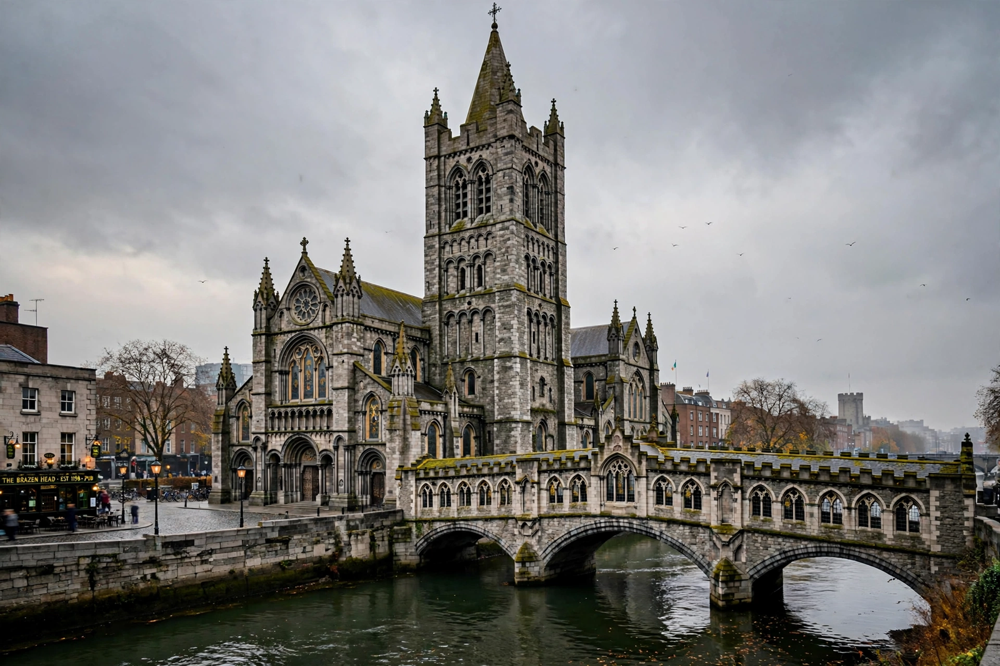

Christ Church Cathedral, Dublin

| Christ Church Cathedral | |
| Location | Christchurch Place, Dublin, Ireland |
|---|---|
| Denomination | Church of Ireland |
| Founded | c. 1028 (Viking church); stone cathedral from c. 1172 |
| Architecture | Romanesque and Gothic |
| Diocese | Dublin and Glendalough |
| Cathedral of | Archbishop of Dublin |
Christ Church Cathedral (or, more formally, The Cathedral of the Holy Trinity) is the elder of Dublin's two medieval cathedrals, the other being St Patrick's Cathedral. It is the cathedral of the United Dioceses of Dublin and Glendalough and the ecclesiastical province of Dublin in the Church of Ireland.
- History
- The crypt
- Strongbow's tomb
- The chapter house and bridge
- Bells and music
History
The cathedral was founded around 1028 by Sitric Silkenbeard, the Hiberno-Norse King of Dublin, on a hill overlooking the Viking settlement at Wood Quay. The first church was wooden; following the Norman invasion of Ireland, the Anglo-Norman lord Strongbow and Archbishop Laurence O'Toole rebuilt it in stone from the 1170s. The Romanesque transepts and the Gothic nave, modelled on English west-country churches, followed over the next decades.
In 1539, under Henry VIII, the Augustinian priory that served the cathedral was dissolved, and Christ Church became a cathedral of the new Church of Ireland with a dean and chapter. The building decayed over the centuries — the nave vault collapsed in 1562 — until the distiller Henry Roe funded an extensive restoration by architect George Edmund Street in the 1870s, which reshaped much of the exterior.
The crypt
Beneath the cathedral runs the largest crypt in Ireland and Britain, extending the full length of the building. Built in the late twelfth century, it now houses an exhibition of cathedral treasures, historic documents, and the famous mummified cat and rat — a cat apparently frozen mid-chase after a rat, both preserved in an organ pipe and mentioned in James Joyce's Finnegans Wake.
Strongbow's tomb
The cathedral contains the tomb traditionally identified as that of Strongbow, the Norman leader whose arrival in 1170 transformed Irish history. The original monument was destroyed when the nave roof collapsed in 1562; the present effigy is a substitute brought from Drogheda, accompanied by a smaller half-figure popularly said to be his son.
The chapter house and bridge
Christ Church is connected to the former synod hall — now the Dublinia Viking and medieval museum — by a distinctive stone bridge arching over Winetavern Street, built during the Victorian restoration.
Bells and music
The cathedral tower houses a ring of 19 bells, a world record for a full-circle ringing peal in a church. Christ Church's professional choir and its girls' choir maintain a prominent musical tradition, and the cathedral claims a link with the first performance of Handel's Messiah in 1742, whose combined choirs came from Christ Church and St Patrick's.
See also: St Patrick's Cathedral, Dublin; Dublin; Strongbow.